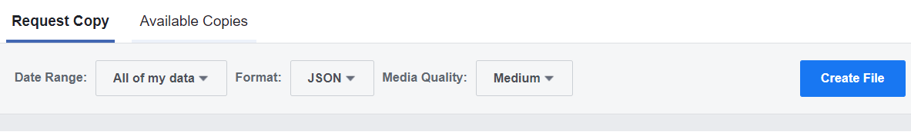

Starting from Facebook go to:
Facebook settings -> Your Facebook Information -> Download Your Information
Make sure to request your data in a JSON format as shown below:

Please note that your data may take a day or so for Facebook to process and is only available for a limited time.
After you get an email notification from Facebook, download the .zip file from the Available Copies tab and load any conversation in:
messages -> inbox -> (FOLDER OF CONVERSATION YOU WANT TO ANALYZE) -> message_1.json